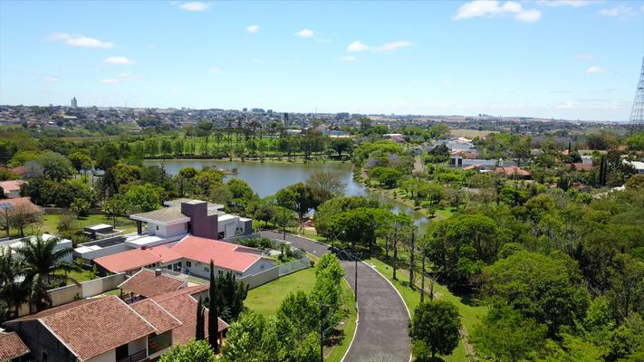

Outrora povoada pelos índios Guaranis, a região da atual cidade de Ivaiporã foi colonizada por brasileiros de várias regiões do Brasil, na década de 1940. Estes pioneiros tinham como principal atividade, a criação de porcos e a exploração de madeira, principalmente os colonos oriundos de Santa Catarina (estes descendentes de ucranianos, poloneses, italianos e alemães). Por outro lado, os pioneiros oriundos de Minas Gerais, São Paulo e Bahia, investiram na agricultura, principalmente na plantação do café.[6] Mais tarde, a empresa "Colonizadora Ubá" recebeu a autorização de exploração das terras e organizou minifúndios, transformando a região num dos últimos eldorados do Paraná.[6] Na década de 1970, com o título de "capital mundial do milho", a cidade tinha como referências econômicas, a exploração de plantio de cereais, como o feijão, o milho, além do algodão, entre outros, sendo aberta várias cooperativas.[6] Em 1951, era conhecida como Distrito de Ivainópolis, recém desmembrada do distrito de Manuel Ribas e incorporado ao município de Pitanga. Em 1955, tornou-se distrito da cidade de Manoel Ribas, quando passa a ser denominada de Ivaiporã.[6] Em 25 de julho de 1960 é elevada a categoria de município
Até por ser cortada pelo chamado Caminho do Peabiru, os primeiros registros históricos desta região do Vale do Ivaí, já remontam ao século XVI. Tais registros mostram que a região era ocupada por índios guaranis antropófagos, como escreveu o padre jesuíta Ruiz Montoya , que chegou às terras do cacique Yataobá em 1611 e empreendeu a instalação de Reduções como as de San Pablo e Los Angeles. Destaca-se nesta região a instalação também de Villa Rica Del Espiritu Santu, na foz do rio Corumbataí, atual município de Fênix. Os espanhóis instalaram esta vila em 1592, escolhendo esta região pelo imenso número de índios, que poderiam ser convertidos nas reduções e explorados nas encomiendas. Vila Rica durou pouco tempo. Em 1628 os bandeirantes paulistas, sob a liderança de Manoel Preto e Raposo Tavares e dois mil índios tupis, desceram a serra do Apucarana e destruíram as reduções jesuíticas, Villa Rica, colocaram os espanhóis batendo em retirada Ivaí abaixo e, índios aprisionados em fila indiana rumo à São Paulo.